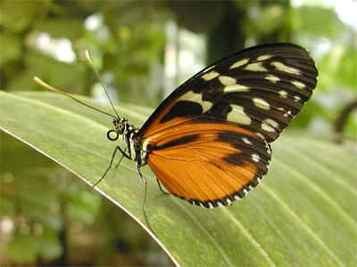

a) Originalbild
Sobel Filter
b) Originalbild mit Sobel Filter
Run the above filter on the image
c) Originalbild mit Eigenem Filter
d) Originalbild mit Laplace Edge-Detection
e) Originalbild mit Edge Filter
f) Originalbild mit Edge2 Filter